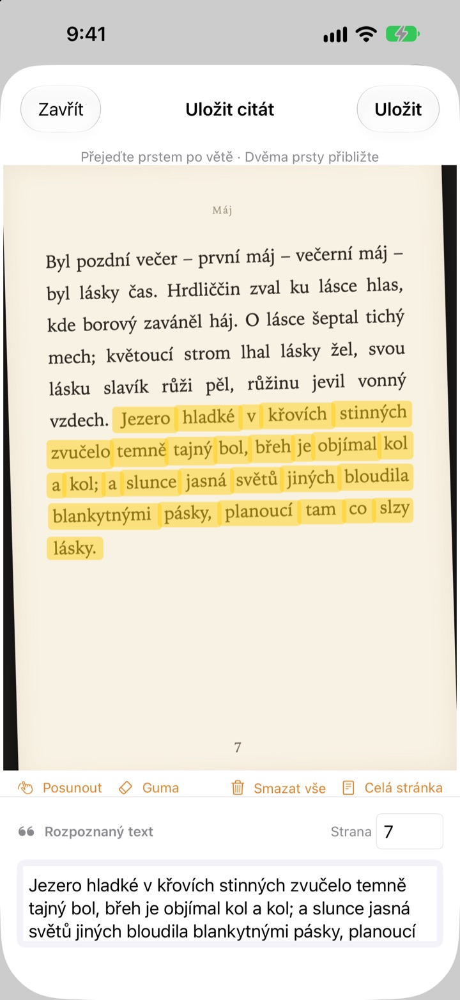
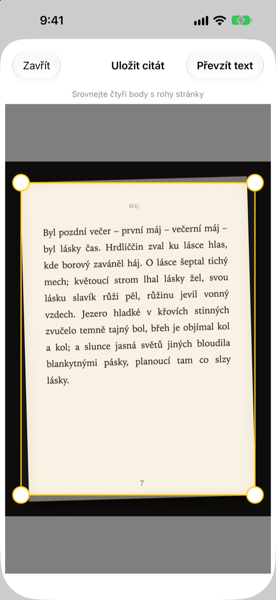
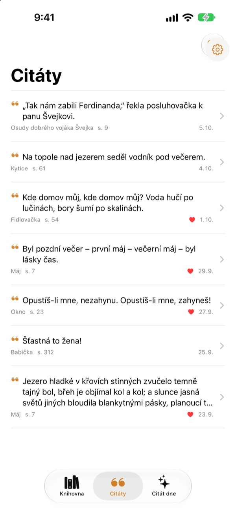
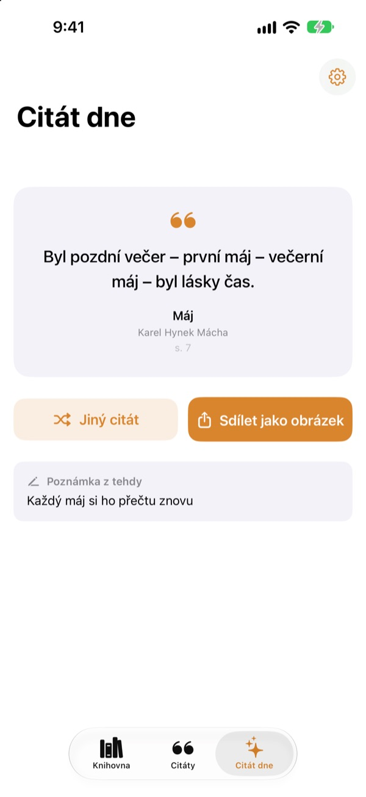

Podtrhávejte v knize
bez tužky
Vyfoťte stránku, přejeďte prstem po větě, která vás zaujala, a jako text se uloží jen ona. Kniha i číslo strany se uloží s ní.
Všechny funkce jsou zdarma a bez reklam.

Vyzkoušejte si to
Přejeďte prstem nebo myší po libovolné větě na stránce níže. Na kartu se dostanou jen slova, přes která přejedete.
Kde končí ty krásné věty?
Kniha je z knihovny, takže do ní psát nemůžete. Fotka stránky zapadne mezi tisíci dalšími v knihovně fotek. Když větu přepíšete do poznámek, název a číslo strany se většinou ztratí. Bookmark Shot uloží větu, knihu i stránku dvěma pohyby: vyfotit a přejet prstem.
Křivá fotka, rovná stránka
Po vyfocení srovnejte čtyři rohy a i stránka vyfocená šikmo se narovná jako list papíru. Ostřejší písmena znamenají lepší rozpoznání.
Poslouží i fotky, které už máte v knihovně.

Všechny citáty na jednom místě
Knihy se řadí do knihovny s obálkami a citáty se sbírají v jednom seznamu. Hledejte podle textu, poznámky nebo názvu knihy a srdíčkem si označte ty, ke kterým se chcete vracet.
Knihu přidáte jedinou fotkou obálky. Název a autor se vyplní samy, a když je v záběru čárový kód ze zadní strany, tak i ISBN.

Znovu objevte zapomenuté věty
Citát dne vám každý den připomene jeden z uložených citátů i s poznámkou, kterou jste si připsali. S widgetem ho máte na ploše nebo na zamčené obrazovce.
Líbí se vám? Udělejte z něj kartu v papírovém stylu a sdílejte ji.

Začněte ve třech krocích
- 1
Vyfoťte obálku
Název a autor se vyplní. Před uložením je můžete upravit.
- 2
Vyfoťte stránku
Srovnejte čtyři rohy a stránka se narovná.
- 3
Přejeďte po větě
Číslo strany se najde a uloží spolu s ní.
Nástroje na obrazovce zvýrazňování
- Přejetí prstem
- vybere jen slova, přes která přejedete
- Roztažení prstů
- přiblíží stránku pro přesnější výběr
- Posun
- posouvá přiblíženou stránku
- Guma
- odebere vybraná slova
- Smazat vše
- zruší výběr všech slov
- Celá stránka
- ponechá celý text stránky
- Pole strany
- nalezené číslo strany, lze upravit
S VoiceOverem řádek přidáte nebo odeberete dvojitým klepnutím.
Všechny funkce zdarma
Zdarma
- Přidání knihy podle obálky, ISBN z čárového kódu
- Narovnání stránek a zvýrazňování prstem
- Automatické číslo strany
- Knihovna, hledání v citátech a oblíbené
- Citát dne s widgety na plochu a zamčenou obrazovku
- Sdílení jako karta
- Synchronizace přes iCloud
Podpořte vývojáře
- Pokud chcete, pošlete v Nastavení malé spropitné
- Spropitné nic neodemyká. Aplikace je pořád stejná
Bez reklam, bez předplatného.
Otázky
Posílají se moje fotky nebo citáty někam?
Ne. Rozpoznávání textu probíhá celé ve vašem zařízení pomocí Apple Vision a fotky ani citáty se nikdy neposílají na server. Funguje i offline. Podrobnosti najdete v Zásadách ochrany soukromí níže.
Které jazyky umí přečíst?
Text rozpoznává systém iOS přímo ve vašem zařízení. Přečte knihy v korejštině, angličtině, japonštině, čínštině, ruštině a ve většině západoevropských jazyků, v novějších verzích iOS také v thajštině, vietnamštině, turečtině, indonéštině, polštině, češtině, nizozemštině a severských jazycích. Řečtinu zatím nerozpozná.
Jak vyberu jen tu větu, kterou chci?
Po vyfocení stránky přejeďte prstem po větě jako zvýrazňovačem a vyberou se jen ta slova. Pro větší přesnost si stránku přibližte dvěma prsty. K dispozici je i guma, „Smazat vše“ a „Celá stránka“.
Název nebo autor se načetl špatně.
Rozpoznávání obálky odhaduje podle velikosti písma, takže u hodně zdobných obálek se může splést. Název i autora můžete před uložením knihy opravit.
Číslo strany nesedí.
Čte se z číslic na okraji fotky. Stačí ho před uložením opravit v poli strany.
Uvidím citáty na více zařízeních?
Ano. Pokud jste přihlášeni k iCloudu stejným Apple účtem a máte zapnutý iCloud Drive, knihy a citáty se synchronizují automaticky.
Jak přidám widget?
Podržte prst na ploše, klepněte na Upravit > Přidat widget a vyberte Bookmark Shot. Na zamčené obrazovce na ní podržte prst a pak klepněte na Přizpůsobit. Zobrazí se tam Citát dne.
Nefunguje fotoaparát.
V Nastavení > Bookmark Shot zkontrolujte, že je povolen přístup k fotoaparátu a fotkám. Na focení potřebujete skutečný iPhone.
Co potřebuji?
iPhone se systémem iOS 17.0 nebo novějším.
Jak vás kontaktovat?
Pošlete zpětnou vazbu z obrazovky Nastavení v aplikaci (ozubené kolečko) nebo nám napište na adresu níže. Obvykle odpovídáme do dvou až tří dnů.
Dotazy nebo náměty? Pište na leeo@kakao.com.